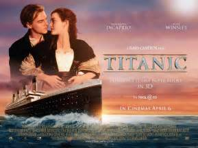
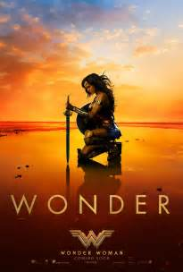

Titanic is a 1997 American epic romance-disaster film directed, written, co-produced and co-edited by James Cameron. A fictionalized account of the sinking of the RMS Titanic, it stars Leonardo DiCaprio and Kate Winslet as members of different social classes who fall in love aboard the ship during its ill-fated maiden voyage.
The Shawshank Redemption is a 1994 American drama film written and directed by Frank Darabont, based on the Stephen King novella Rita Hayworth and Shawshank Redemption. It tells the story of banker Andy Dufresne (Tim Robbins), who is sentenced to life in Shawshank State Penitentiary for the murder of his wife and her lover, despite his claims of innocence. Over the following two decades, he befriends a fellow prisoner, contraband smuggler Ellis "Red" Redding (Morgan Freeman), and becomes instrumental in a money laundering operation led by the prison warden Samuel Norton (Bob Gunton). The film also stars William Sadler, Clancy Brown, Gil Bellows, and James Whitmore.
Wonder Woman is a fictional superhero appearing in American comic books published by DC Comics. The character is a founding member of the Justice League, goddess, and Ambassador-at-Large of the Amazonian people. The character first appeared in All Star Comics #8 in October 1941 and first cover-dated on Sensation Comics #1, January 1942. In her homeland, the island nation of Themyscira, her official title is Princess Diana of Themyscira, Daughter of Hippolyta. When blending into the society outside of her homeland, she adopts her civilian identity Diana Prince. The character is also referred to by such epithets as the "Amazing Amazon", the "Spirit of Truth", "Themyscira's Champion", the "God-killer", and the "Goddess of Love and War".
Collateral Beauty is a 2016 American drama film directed by David Frankel and written by Allan Loeb. The film stars an ensemble cast of Will Smith, Edward Norton, Keira Knightley, Michael Peña, Naomie Harris, Jacob Latimore, Kate Winslet, and Helen Mirren. It follows a man who copes with his daughter's death by writing letters to time, death, and love.
Home